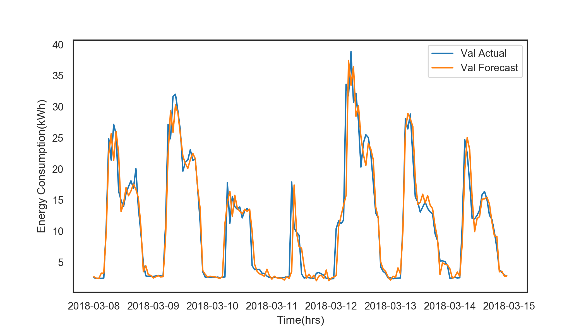
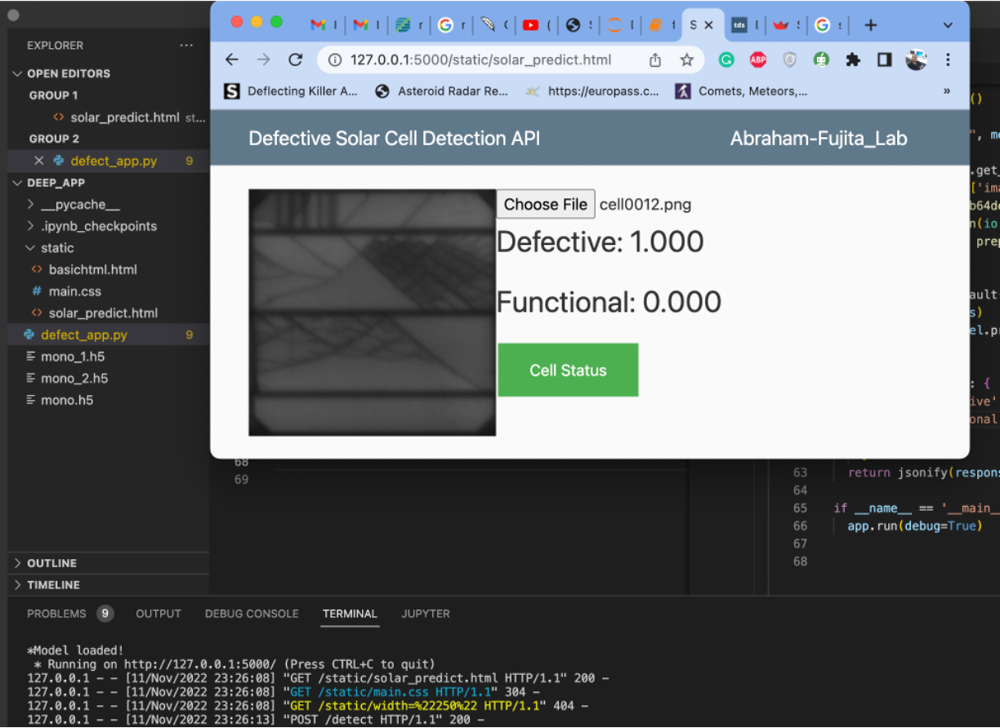
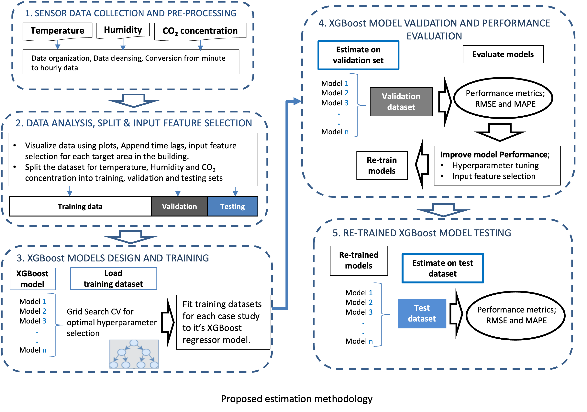
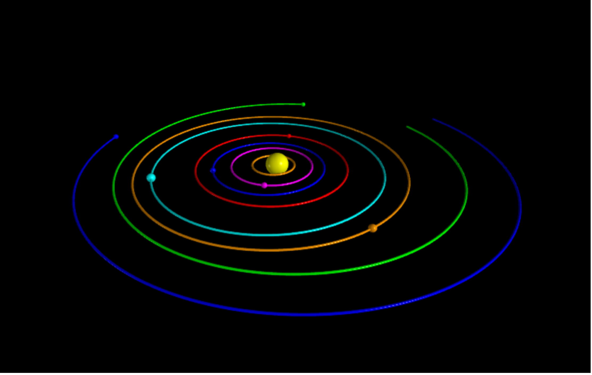

This is a short term load forecasting project. We manipulate and organise a large energy consumption dataset in jupyter notebooks. Data cleansing, preprocessing, data analysis, feature engineering, regression modeling using ML and DL.
Results of a week ahead forecasting are evaluated using perfomance metrics. WaveNet outperforms other models


Custom CNN model for image classification of functional and defective solar panel cells. Over 92.5% accuracy on test dataset. Currently working on collecting own dataset.

Introduction to python for crash course for AI undergrad students. Pandas, Numpy, Matplotlib and Neural Networks for classification are introduced.

Room Temeperature Estimation, Relative Humidity Estimation, CO2 concentrations Estimation in a smart building. These estimations are neccesary for optimal operation of HVAC systems. Check out my paper on this project.

In this project, the gravitational attraction of planets around our sun is computed and visualized using vpython. Vpython is a great tool for science simulations